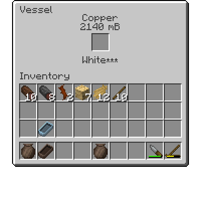

Руди, Метали та Лиття
Руди, Метали та Лиття
Окрім паличок, гілочок і каміння на землі, під час подорожей ви можете зустріти маленькі шматки руди, розкидані навколо. Вони дуже важливі, адже є одним з небагатьох джерел руди та металу до отримання кайла.
Mультиблок
Усі малі шматки руди
Ці маленькі шматки руди можуть виконувати дві функції: вони можуть слугувати джерелом металу, а ще важливіше — вказують на наявність більшої жилки руди десь поруч, ймовірно, під землею та близько до поверхні. Обов’язково відзначайте місця, де знаходите дрібні руди, оскільки розташування рудних жил буде корисним пізніше під час Розвідки.
Дванадцять типів дрібних руд і метал, у який вони можуть бути переплавлені, перелічені на наступній сторінці.
Маленькі Руди
- Самородна Мідь (Мідь)
- Самородне Золото (Золото)
- Гематит (Чавун)
- Самородне Срібло (Срібло)
- Каситерит (Олово)
- Вісмутиніт (Вісмут)
- Гарнієрит (Нікель)
- Малахіт (Мідь)
- Магнетит (Чавун)
- Лімоніт (Чавун)
- Сфалерит (Цинк)
- Тетраедрит (Мідь)
Виливка
У TerraFirmaCraft кожна руда містить певну кількість одиниць або mB (мілібаків) фактичного металу, який можна витягти. Маленькі руди, знайдені на поверхні, мають найнижчу якість і дають лише 16 mB металу. Щоб витягти цей метал, його потрібно розплавити, а потім створити з нього інструменти за допомогою процесу лиття.
Вам знадобиться:
- Маленька Посудина
- Достатньо матеріалів для Ямної Печі.
- Одна або більше Форм для лиття розплавленого металу.
- І нарешті, щонайменше 144 mB металу, який підходить для лиття: Мідь, в одній або більше з її трьох рудних форм.
Примітка: Лиття також можна виконувати з деякими Сплавами
Спершу відкрийте Маленьку Посудину і покладіть усередину руди. Уважно підрахуйте загальну кількість металу в рудах! Посудина може вмістити лише до 3024 мБ розплавленого металу, надлишок буде втрачено. Потім потрібно збудувати Ямну Піч із заповненою маленькою посудиною всередині. Під час нагрівання посудини руди всередині розплавляться, і ви отримаєте посудину з розплавленим металом.
Обережно, посудина буде гарячою! Зробіть Дерев’яні Щипці з двох палиць і ножа та тримайте їх у другій руці, щоб безпечно брати гарячу посудину.
Тримайте посудину та натисніть ПКМ, щоб відкрити інтерфейс Виливання.
Відкривши інтерфейс лиття, помісти порожню випалену форму в центральний слот. Він буде наповнюватися доти, поки метал залишається рідким. (Якщо метал ствердне, його можна розігріти в іншій печі). Коли форма заповниться, її можна вийняти з горщика та залишити охолоджуватися. Після охолодження форми, її вміст можна вийняти за допомогою інтерфейсу крафта.
Тепер ви можете створити своє перше кайло! Знайдіть достатньо міді, щоб зробити наконечник кирки, обпаліть форму для кирки та розплавте руду в ямній печі, потім відлийте наконечник. Прикріпіть його до палиці — і вуаля! Тепер ви можете копати руду.
Ще кілька важливих металевих інструментів також доступні для подальшого розвитку. Зубило корисне для роботи з кам’яними блоками під час будівництва та в інших рецептах.
Пила дозволяє перетворювати деревні колоди на опорні балки та пиломатеріали, з яких далі можна виготовити дошки, верстак, бочки, скрині та інші речі. Вона також корисна для створення каное.